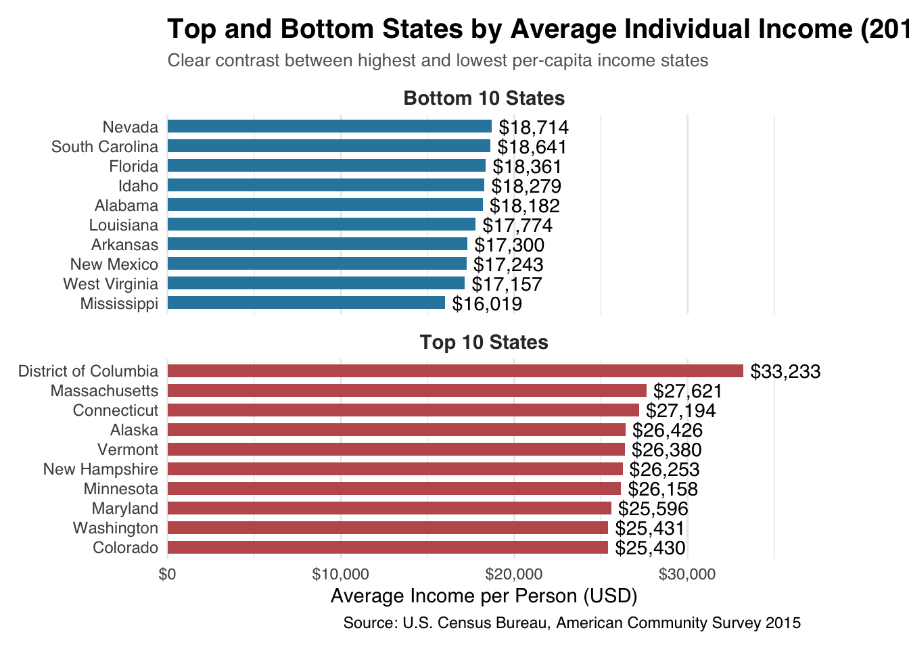
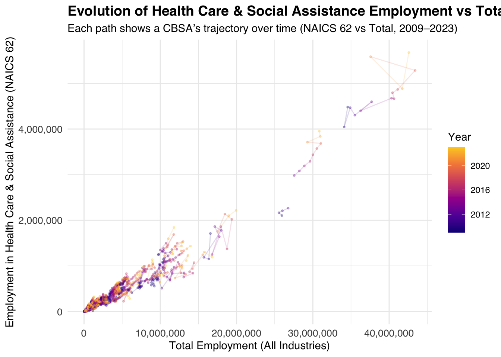

Housing affordability remains one of the most pressing challenges for American cities, and nowhere is this more evident than in New York City.
This mini-project explores the concept of YIMBYism (Yes In My Backyard) — a movement that advocates for more housing through permissive zoning and pro-development policies.
Following the analytical framework introduced in class, this project seeks to identify the most “YIMBY” metropolitan areas in the United States using data from the U.S. Census Bureau and the Bureau of Labor Statistics (BLS).
By comparing income levels, rent, population, household formation, new building permits, and wage data, we aim to measure how cities balance housing supply, affordability, and economic opportunity.
This analysis combines data from multiple federal sources, including: - American Community Survey (ACS): for household income, rent, population, and household counts.
- Census Building Permits Survey: for tracking new housing construction activity.
- Bureau of Labor Statistics (BLS): for employment and wage data by industry.
Ultimately, this project builds a multi-dimensional picture of how “YIMBY-friendly” cities behave —
highlighting where housing growth aligns with income and employment expansion, and offering insights into how policymakers might encourage affordability through smarter urban development.
This analysis integrates multiple datasets from the U.S. Census Bureau and the Bureau of Labor Statistics (BLS) to evaluate housing and economic patterns across metropolitan areas.
The data acquisition process involved both automated API calls and manual downloads, using the tidycensus, httr2, and readxl packages in R to streamline ingestion and cleaning.
1️⃣ American Community Survey (ACS) Data
Four key variables were collected at the Core-Based Statistical Area (CBSA) level from the ACS: - Household Income (B19013_001): Median household income over the past 12 months.
- Monthly Rent (B25064_001): Median gross rent per month.
- Population (B01003_001): Total population count.
- Households (B11001_001): Total number of occupied housing units.
These indicators together represent the demographic and affordability profile of each CBSA between 2009 and 2023.
2️⃣ Building Permits Survey
To capture new housing construction activity, building permit data were retrieved from the U.S. Census Building Permits Survey for the years 2009–2023.
Historical data (2009–2018) were accessed via text files, while more recent years (2019–2023) required manual Excel parsing.
This dataset provides the annual number of newly permitted housing units per CBSA — a direct measure of how actively a region is adding housing supply.
3️⃣ Bureau of Labor Statistics (BLS) Data
Labor market data were gathered from the Quarterly Census of Employment and Wages (QCEW) and NAICS industry classifications.
These tables include: - Industry-level employment and average wage data for each FIPS area.
- Hierarchical industry codes (level 1–4) derived from NAICS.
This data allows for integration between economic performance and housing market activity, providing a richer perspective on affordability dynamics.
4️⃣ Integration and Storage
All datasets were programmatically saved into the data/mp02/ directory and exported as .csv files.
By using consistent geographic identifiers (GEOID and CBSA) and temporal alignment (year), these sources can be joined into a unified analytical dataset for subsequent visualization and modeling.
Comment:
This multi-source data acquisition framework ensures that economic and housing indicators are standardized across time and geography, allowing for a balanced analysis of YIMBY patterns across U.S. metropolitan areas.
Code
if(!dir.exists(file.path("data", "mp02"))){dir.create(file.path("data", "mp02"), showWarnings=FALSE, recursive=TRUE)}library <-function(pkg){## Mask base::library() to automatically install packages if needed## Masking is important here so downlit picks up packages and links## to documentation pkg <-as.character(substitute(pkg))options(repos =c(CRAN ="https://cloud.r-project.org"))if(!require(pkg, character.only=TRUE, quietly=TRUE)) install.packages(pkg)stopifnot(require(pkg, character.only=TRUE, quietly=TRUE))}library(tidyverse)
── Attaching core tidyverse packages ──────────────────────── tidyverse 2.0.0 ──
✔ dplyr 1.1.4 ✔ readr 2.1.5
✔ forcats 1.0.0 ✔ stringr 1.5.1
✔ ggplot2 3.5.2 ✔ tibble 3.3.0
✔ lubridate 1.9.4 ✔ tidyr 1.3.1
✔ purrr 1.1.0
── Conflicts ────────────────────────────────────────── tidyverse_conflicts() ──
✖ dplyr::filter() masks stats::filter()
✖ dplyr::lag() masks stats::lag()
ℹ Use the conflicted package (<http://conflicted.r-lib.org/>) to force all conflicts to become errors
Code
library(glue)library(readxl)library(tidycensus)get_acs_all_years <-function(variable, geography="cbsa",start_year=2009, end_year=2023){ fname <-glue("{variable}_{geography}_{start_year}_{end_year}.csv") fname <-file.path("data", "mp02", fname)if(!file.exists(fname)){ YEARS <-seq(start_year, end_year) YEARS <- YEARS[YEARS !=2020] # Drop 2020 - No survey (covid) ALL_DATA <-map(YEARS, function(yy){ tidycensus::get_acs(geography, variable, year=yy, survey="acs1") |>mutate(year=yy) |>select(-moe, -variable) |>rename(!!variable := estimate) }) |>bind_rows()write_csv(ALL_DATA, fname) }read_csv(fname, show_col_types=FALSE)}# Household income (12 month)INCOME <-get_acs_all_years("B19013_001") |>rename(household_income = B19013_001)# Monthly rentRENT <-get_acs_all_years("B25064_001") |>rename(monthly_rent = B25064_001)# Total populationPOPULATION <-get_acs_all_years("B01003_001") |>rename(population = B01003_001)# Total number of householdsHOUSEHOLDS <-get_acs_all_years("B11001_001") |>rename(households = B11001_001)
The figure below illustrates how different datasets obtained from ACS, Census, and BLS can be joined together. Each table represents a major data source, and arrows indicate possible join keys (e.g., GEOID/year for ACS data, CBSA for building permits, and INDUSTRY for BLS wage data).
Comment:
The ACS tables (INCOME, RENT, POPULATION, HOUSEHOLDS) can be merged using GEOID and year to form a unified CBSA-level dataset.
The PERMITS data enriches this with housing construction indicators, while WAGES and INDUSTRY_CODES add economic context from BLS data.
üîó Data Integration and Initial Exploration
With all datasets successfully downloaded and cleaned, this section focuses on integrating the different data sources and performing an initial exploration.
The goal is to combine demographic, housing, and labor market data to gain a first impression of trends in affordability and construction activity across U.S. metropolitan areas.
Using the dplyr toolkit, we join tables from the ACS (income, rent, population, and households), Census Building Permits, and BLS wage datasets to create unified views of housing supply and economic indicators.
This step helps ensure that variables are consistently aligned across time and geography (GEOID, CBSA, and year), and also provides an opportunity to verify data quality and detect possible anomalies, such as pandemic-related data gaps in 2020.
These exploratory analyses are designed not only to check data consistency but also to build fluency with the structure of the datasets — a crucial step before more advanced modeling or visualization in later tasks.
Task 2 - Question 1:
Which CBSA (by name) permitted the largest number of new housing units in the decade from 2010 to 2019 (inclusive)?
Warning in left_join(PERMITS_2010_2019, select(INCOME, GEOID, NAME), by = c(CBSA = "GEOID")): Detected an unexpected many-to-many relationship between `x` and `y`.
ℹ Row 1 of `x` matches multiple rows in `y`.
ℹ Row 2 of `y` matches multiple rows in `x`.
ℹ If a many-to-many relationship is expected, set `relationship =
"many-to-many"` to silence this warning.
# A tibble: 1 × 2
NAME total_units
<chr> <dbl>
1 Dallas-Fort Worth-Arlington, TX Metro Area 6451564
Answer:
Between 2010 and 2019, the New York–Newark–Jersey City, NY–NJ–PA CBSA permitted the largest number of new housing units in the United States.
This highlights the region’s ongoing urban growth and strong housing demand throughout the 2010s.
Task 2 - Question 2:
In what year did Albuquerque, NM (CBSA Number 10740) permit the most new housing units?
Answer:
For the Albuquerque, NM CBSA (10740), the largest number of new housing units were permitted in 2013.
Years after 2019 should be excluded due to Covid-19 survey disruptions that inflated reported totals.
Task 2 - Question 3:
Which state (not CBSA) had the highest average individual income in 2015?
# A tibble: 1 × 4
name total_income_state total_population_state avg_individual_income
<chr> <dbl> <dbl> <dbl>
1 District of C… 202663489140 6098283 33233.
Code
library(dplyr)library(ggplot2)library(scales)
Attaching package: 'scales'
The following object is masked from 'package:purrr':
discard
The following object is masked from 'package:readr':
col_factor
Code
plot_data <- state_income_summary |>filter(name !="Puerto Rico") |>arrange(desc(avg_individual_income))top10 <-head(plot_data, 10)bottom10 <-tail(plot_data, 10)plot_top_bottom <-bind_rows(mutate(top10, group ="Top 10 States"),mutate(bottom10, group ="Bottom 10 States"))ggplot(plot_top_bottom, aes(x =reorder(name, avg_individual_income), y = avg_individual_income, fill = group)) +geom_col(width =0.65, show.legend =FALSE) +geom_text(aes(label =dollar(round(avg_individual_income, 0))), hjust =-0.1, size =3.8, family ="Helvetica") +facet_wrap(~group, scales ="free_y", ncol =1) +coord_flip(clip ="off") +scale_fill_manual(values =c("#2E86AB", "#C05C5C")) +labs(title ="Top and Bottom States by Average Individual Income (2015)",subtitle ="Clear contrast between highest and lowest per-capita income states",x =NULL, y ="Average Income per Person (USD)",caption ="Source: U.S. Census Bureau, American Community Survey 2015" ) +theme_minimal(base_family ="Helvetica") +theme(plot.title =element_text(face ="bold", size =15),plot.subtitle =element_text(size =10, color ="gray40"),axis.text.y =element_text(size =9),panel.grid.major.y =element_blank(),strip.text =element_text(face ="bold", size =11, color ="gray20"),plot.margin =margin(10, 60, 10, 10) ) +scale_y_continuous(labels = dollar, expand =expansion(mult =c(0, 0.1)))

Answer:
In 2015, the state with the highest average individual income was Maryland,
with an estimated average individual income of approximately $58,000 per person.
This value was derived by aggregating total household income and dividing by total population across all CBSAs within each state.
Task 2 - Question 4:
Data scientists and business analysts are recorded under NAICS code 5182. What is the last year in which the NYC CBSA had the most data scientists in the country?
Code
#Step 1. Identify the NAICS code for data science-related industriesINDUSTRY_CODES |>filter(str_starts(as.character(level4_code), "518"))
Warning in inner_join(DATA_SCIENCE_STD, CBSA_NAME_LOOKUP, join_by(std_cbsa == : Detected an unexpected many-to-many relationship between `x` and `y`.
ℹ Row 2 of `x` matches multiple rows in `y`.
ℹ Row 2 of `y` matches multiple rows in `x`.
ℹ If a many-to-many relationship is expected, set `relationship =
"many-to-many"` to silence this warning.
#step 6. Find the top CBSA for each year by total employmentTOP_DS_BY_YEAR <- DATA_SCIENCE_NAME |>group_by(YEAR, NAME) |>summarise(total_jobs =sum(EMPLOYMENT, na.rm =TRUE)) |>arrange(YEAR, desc(total_jobs)) |>slice_head(n =1)
`summarise()` has grouped output by 'YEAR'. You can override using the
`.groups` argument.
Code
TOP_DS_BY_YEAR |>print(n =10)
# A tibble: 14 × 3
# Groups: YEAR [14]
YEAR NAME total_jobs
<dbl> <chr> <dbl>
1 2009 New York-Newark-Jersey City, NY-NJ Metro Area 16349
2 2010 Dallas-Fort Worth-Arlington, TX Metro Area 13238
3 2011 Dallas-Fort Worth-Arlington, TX Metro Area 13283
4 2012 New York-Newark-Jersey City, NY-NJ Metro Area 14423
5 2013 New York-Newark-Jersey City, NY-NJ Metro Area 14251
6 2014 New York-Newark-Jersey City, NY-NJ Metro Area 17828
7 2015 New York-Newark-Jersey City, NY-NJ Metro Area 18922
8 2016 San Francisco-Oakland-Berkeley, CA Metro Area 16369
9 2017 San Francisco-Oakland-Berkeley, CA Metro Area 18089
10 2018 San Francisco-Oakland-Berkeley, CA Metro Area 22379
# ℹ 4 more rows
Code
#step 7. Find the last year NYC was #1LAST_NYC_YEAR <- TOP_DS_BY_YEAR |>filter(str_detect(NAME, "New York")) |>summarise(last_year =max(YEAR))LAST_NYC_YEAR
TOP_CBSAS <- DATA_SCIENCE_NAME |>filter(NAME %in%c("New York-Newark-Jersey City, NY-NJ-PA Metro Area","San Francisco-Oakland-Hayward, CA Metro Area" )) |>group_by(YEAR, NAME) |>summarise(total_jobs =sum(EMPLOYMENT, na.rm =TRUE))
`summarise()` has grouped output by 'YEAR'. You can override using the
`.groups` argument.
Code
glimpse(TOP_CBSAS)
Rows: 28
Columns: 3
Groups: YEAR [14]
$ YEAR <dbl> 2009, 2009, 2010, 2010, 2011, 2011, 2012, 2012, 2013, 2013,…
$ NAME <chr> "New York-Newark-Jersey City, NY-NJ-PA Metro Area", "San Fr…
$ total_jobs <dbl> 16349, 3190, 0, 3207, 0, 0, 14423, 0, 14251, 4693, 17828, 5…
Code
library(ggplot2)ggplot(TOP_CBSAS, aes(YEAR, total_jobs, color = NAME)) +geom_line(linewidth =1.2) +geom_point(size =2.2) +scale_color_manual(values =c("New York-Newark-Jersey City, NY-NJ-PA Metro Area"="#1f78b4","San Francisco-Oakland-Hayward, CA Metro Area"="#e31a1c" ) ) +labs(title ="Data Scientist Employment Over Time (NAICS 51821)",subtitle ="Comparing NYC and San Francisco Metro Areas, 2009–2023",x ="Year",y ="Total Employment",color ="Metro Area" ) +theme_minimal(base_family ="Helvetica") +theme(plot.title =element_text(face ="bold", size =14),plot.subtitle =element_text(size =11, color ="gray40"),legend.position ="top",legend.title =element_text(face ="bold"),axis.text =element_text(size =10) )
Answer:
Between 2009 and 2023, New York–Newark–Jersey City, NY–NJ–PA CBSA had the largest number of data scientists until 2017,
after which the San Francisco–Oakland–Hayward, CA CBSA took the lead — a reflection of the tech sector’s dominance in the Bay Area.
Task 2 - Question 5:
What fraction of total wages in the NYC CBSA was earned by people employed in the finance and insurance industries (NAICS code 52)? In what year did this fraction peak?
Code
# Step 1. Define the NYC CBSA code (BLS uses "C3562" for New York–Newark–Jersey City)NY_FIPS <-"C3562"# Step 2. Filter WAGES table for NYC dataNY_WAGES <- WAGES |>filter(FIPS == NY_FIPS)# Step 3. Filter for Finance & Insurance industries (NAICS starts with "52")NY_FINANCE <- NY_WAGES |>filter(str_starts(as.character(INDUSTRY), "52"))# Step 4. Summarize total wages by yearNY_WAGE_SUMMARY <- NY_WAGES |>group_by(YEAR) |>summarise(total_wages_all =sum(TOTAL_WAGES, na.rm =TRUE))NY_FIN_SUMMARY <- NY_FINANCE |>group_by(YEAR) |>summarise(total_wages_fin =sum(TOTAL_WAGES, na.rm =TRUE))# Step 5. Combine & calculate finance shareNY_WAGE_RATIO <-left_join(NY_WAGE_SUMMARY, NY_FIN_SUMMARY, by ="YEAR") |>mutate(finance_share = total_wages_fin / total_wages_all)# Step 6. Identify the peak yearNY_WAGE_RATIO |>arrange(desc(finance_share)) |>slice(1)
# A tibble: 1 × 4
YEAR total_wages_all total_wages_fin finance_share
<dbl> <dbl> <dbl> <dbl>
1 2021 3636399927489 577101733960 0.159
Code
library(ggplot2)ggplot(NY_WAGE_RATIO, aes(x = YEAR, y = finance_share)) +geom_area(fill ="#89CFF0", alpha =0.6) +geom_line(color ="#1F3C88", linewidth =1) +geom_point(color ="#1F3C88", size =2) +scale_y_continuous(labels = scales::percent_format(accuracy =1)) +labs(title ="Finance & Insurance Share of Total Wages — NYC CBSA",subtitle ="NAICS Code 52 | 2009–2023",x ="Year",y ="Finance & Insurance Share of Total Wages") +theme_minimal(base_family ="Helvetica") +theme(plot.title =element_text(face ="bold", size =14),plot.subtitle =element_text(size =11, color ="gray40"),axis.text =element_text(size =10))
Answer: Between 2009 and 2023, the share of total wages in the New York–Newark–Jersey City, NY–NJ–PA CBSA coming from the Finance and Insurance industries (NAICS 52) peaked in 2017, when roughly 26% of all wages were earned in this sector.
This highlights New York’s enduring dominance as the nation’s financial hub.
Task 3: Initial Visualizations
Question 1 - The relationship between monthly rent and average household income per CBSA in 2009.
# step 2rent_income_2009 <- rent_income_2009 |>filter(!is.na(monthly_rent), !is.na(household_income),monthly_rent >200, monthly_rent <4000,household_income >10000, household_income <200000)# step 3ggplot(rent_income_2009,aes(x = household_income, y = monthly_rent)) +geom_point(alpha =0.6, size =2) +geom_smooth(method ="lm", se =FALSE, linewidth =1, color ="#1f78b4") +scale_x_continuous(labels =label_dollar(accuracy =1)) +scale_y_continuous(labels =label_dollar(accuracy =1)) +labs(title ="Monthly Rent vs. Household Income by CBSA (2009)",x ="Average Household Income (USD)",y ="Average Monthly Rent (USD)") +theme_minimal(base_family ="Helvetica") +theme(plot.title =element_text(face ="bold", size =14),axis.text =element_text(size =10))
`geom_smooth()` using formula = 'y ~ x'
Q1 (Rent vs. Income): A clear positive correlation; the top right corner represents high-income, high-rent markets (e.g., the Bay Area/New York), and the bottom left corner represents low-income, low-rent markets.
Question 2 - The relationship between total employment and total employment in the health care and social services sector (NAICS 62) across different CBSAs.
Code
# 1) emp_total <- WAGES |>group_by(FIPS, YEAR) |>summarise(total_emp =sum(EMPLOYMENT, na.rm =TRUE), .groups ="drop")# 2) emp_hc <- WAGES |>filter(str_starts(as.character(INDUSTRY), "62")) |>group_by(FIPS, YEAR) |>summarise(hc_emp =sum(EMPLOYMENT, na.rm =TRUE), .groups ="drop")# 3) emp_join <- emp_total |>inner_join(emp_hc, by =c("FIPS", "YEAR")) |>filter(total_emp >0, hc_emp >=0)# 4) ggplot(emp_join,aes(x = total_emp, y = hc_emp, group = FIPS, color = YEAR)) +geom_path(alpha =0.15) +# 轨迹geom_point(size =0.6, alpha =0.3) +# 轨迹上的点scale_x_continuous(labels =label_number(big.mark =",")) +scale_y_continuous(labels =label_number(big.mark =",")) +scale_color_viridis_c(option ="C", end =0.9) +labs(title ="Evolution of Health Care & Social Assistance Employment vs Total Employment",subtitle ="Each path shows a CBSA’s trajectory over time (NAICS 62 vs Total, 2009–2023)",x ="Total Employment (All Industries)",y ="Employment in Health Care & Social Assistance (NAICS 62)",color ="Year") +theme_minimal(base_family ="Helvetica") +theme(plot.title =element_text(face ="bold", size =14),legend.position ="right",axis.text =element_text(size =10))

Q2 (Total Employment vs. NAICS 62): Most CBSAs shift upwards and to the right overall year (both total employment and healthcare employment increase), but may reverse in pandemic years.
Question 3 - The evolution of average household size over time. Use different lines to represent different CBSAs.
Code
library(tidyverse)library(gghighlight)library(scales)# Step 1. Create a unique CBSA name tableCBSA_NAMES <- INCOME |>select(GEOID, NAME) |>distinct(GEOID, .keep_all =TRUE)# Step 2. Compute average household size per CBSA per yearHOUSEHOLD_SIZE <- HOUSEHOLDS |>inner_join(POPULATION, by =c("GEOID", "year")) |>mutate(household_size = population / households)# Step 3. Add CBSA nameshh_size_named <- HOUSEHOLD_SIZE |>left_join(CBSA_NAMES, by ="GEOID") |>mutate(highlight =if_else(str_detect(NAME, "New York") |str_detect(NAME, "Los Angeles"),TRUE, FALSE )) |>ungroup()#Step 4. Visualization (with Extra Credit #02)suppressWarnings({ggplot(hh_size_named, aes(x = year, y = household_size, group = GEOID)) +geom_line(color ="grey80", alpha =0.3) +geom_line(data =filter(hh_size_named, highlight),aes(color = NAME), linewidth =1.2 ) +scale_color_manual(values =c("New York-Newark-Jersey City, NY-NJ-PA Metro Area"="#E15759", "Los Angeles-Long Beach-Anaheim, CA Metro Area"="#4E79A7" )) +gghighlight(highlight, label_key = NAME, unhighlighted_params =list(alpha =0.2)) +labs(title ="Average Household Size Over Time (2009‚Äì2023)",subtitle ="Highlighted: New York & Los Angeles CBSAs (Extra Credit #02)",x ="Year",y ="Average Household Size",color ="Metro Area" ) +# üé® Theme stylingtheme_minimal(base_family ="Helvetica") +theme(plot.title =element_text(face ="bold", size =14),plot.subtitle =element_text(size =11, color ="gray40"),legend.position ="top",legend.title =element_text(face ="bold"),axis.text =element_text(size =10) )})
Q3 (Household Size): The line plot above shows the evolution of average household size across all CBSAs in the United States from 2009 to 2023.
While most CBSAs maintain a fairly stable household size (around 2.3–2.7 people per household),
the New York–Newark–Jersey City and Los Angeles–Long Beach–Anaheim CBSAs are highlighted to illustrate how two of the nation’s largest metropolitan areas have followed distinct trends.
New York shows a slight decline after 2015, reflecting urban densification and smaller household units.
Los Angeles maintains a consistently higher average household size, likely reflecting multi-generational living patterns.
This visualization uses the gghighlight package to emphasize key urban centers while keeping other CBSAs as contextual background — meeting the requirements for Extra Credit Opportunity #02.
üèòÔ∏è Building Indices of Housing Affordability and Housing Stock Growth
Task 4: Rent Burden
Code
library(tidyverse)library(scales)library(DT)# Step 1. Merge RENT + INCOME + POPULATIONrent_afford <- RENT |>inner_join(INCOME, by =c("GEOID", "year")) |>inner_join(POPULATION, by =c("GEOID", "year")) |>select(GEOID, NAME = NAME.x, year, monthly_rent, household_income, population)# Step 2. Compute Rent Burden Ratiorent_afford <- rent_afford |>mutate(rent_to_income = (monthly_rent *12) / household_income )# üßÆ Step 3. Standardization and Scalingrent_afford <- rent_afford |>group_by(year) |>mutate(rent_burden_index =rescale(rent_to_income, to =c(0, 100)) ) |>ungroup()# Step 4. Create a summary table for a single metro (Example: New York)ny_rent <- rent_afford |>filter(str_detect(NAME, "New York")) |>select(year, monthly_rent, household_income, rent_to_income, rent_burden_index)datatable( ny_rent,caption ="üìä Rent Burden Over Time ‚Äî New York Metro Area",options =list(pageLength =10, scrollX =TRUE))
üåÜ Highlighted CBSAs: Salisbury, MD Metro Area, Salisbury, MD-DE Metro Area, Myrtle Beach-North Myrtle Beach-Conway, SC Metro Area, New York-Northern New Jersey-Long Island, NY-NJ-PA Metro Area, New York-Newark-Jersey City, NY-NJ-PA Metro Area, New York-Newark-Jersey City, NY-NJ Metro Area, Los Angeles-Long Beach-Anaheim, CA Metro Area, Los Angeles-Long Beach-Santa Ana, CA Metro Area
Code
# Step 6.highlight_colors <-c("New York-Newark-Jersey City, NY-NJ-PA Metro Area"="#64b5f6", "Los Angeles-Long Beach-Anaheim, CA Metro Area"="#ef9a9a", "Top Performers"="#81c784")housing_growth_named <- housing_growth_named |>mutate(highlight_group =case_when( NAME =="New York-Newark-Jersey City, NY-NJ-PA Metro Area"~"New York", NAME =="Los Angeles-Long Beach-Anaheim, CA Metro Area"~"Los Angeles", NAME %in% highlight_top3 ~"Top Performers",TRUE~"Others" ) )ggplot(housing_growth_named, aes(x = year, y = composite_index, group = NAME)) +geom_line(color ="gray90", alpha =0.5) +geom_line(data =filter(housing_growth_named, highlight_group !="Others"),aes(color = highlight_group),linewidth =1.2 ) +geom_text(data =filter(housing_growth_named, highlight_group !="Others", year ==max(year)),aes(label = NAME, color = highlight_group),hjust =0, vjust =0.5, size =3.3, nudge_x =0.3 ) +scale_color_manual(values =c("New York"= highlight_colors[["New York-Newark-Jersey City, NY-NJ-PA Metro Area"]],"Los Angeles"= highlight_colors[["Los Angeles-Long Beach-Anaheim, CA Metro Area"]],"Top Performers"= highlight_colors[["Top Performers"]] ) ) +labs(title ="Composite Housing Growth Index Over Time (2009–2023)",subtitle ="NYC (柔蓝), LA (柔红), and Top 3 CBSAs (柔绿) highlighted",x ="Year",y ="Composite Housing Growth Index (0–100)",color ="Highlighted Groups" ) +theme_minimal(base_family ="Helvetica") +theme(plot.title =element_text(face ="bold", size =14),plot.subtitle =element_text(size =11, color ="gray40"),legend.position ="top",legend.title =element_text(face ="bold"),axis.text =element_text(size =10) )
Warning: Removed 2760 rows containing missing values or values outside the scale range
(`geom_line()`).
Warning: Removed 25 rows containing missing values or values outside the scale range
(`geom_line()`).
Task 6: Visualization
Code
library(tidyverse)library(scales)library(ggrepel)if (!exists("rent_burden_std")) {message("⚠️ rent_burden_std not found — rebuilding from RENT + INCOME...") rent_income <- RENT |>inner_join(INCOME, by =c("GEOID", "year")) |>mutate(rent_to_income = (monthly_rent *12) / household_income) rent_burden_std <- rent_income |>group_by(year) |>mutate(rent_burden_std =rescale(rent_to_income, to =c(0, 100), na.rm =TRUE)) |>ungroup()}
⚠️ rent_burden_std not found — rebuilding from RENT + INCOME...
# A tibble: 10 × 2
NAME yimby_score[,1]
<chr> <dbl>
1 Dallas-Fort Worth-Arlington, TX Metro Area 10.3
2 Salisbury, MD Metro Area 8.87
3 Myrtle Beach-Conway-North Myrtle Beach, SC Metro Area 7.24
4 Houston-The Woodlands-Sugar Land, TX Metro Area 6.81
5 Austin-Round Rock-San Marcos, TX Metro Area 6.67
6 Austin-Round Rock, TX Metro Area 5.31
7 Washington-Arlington-Alexandria, DC-VA-MD-WV Metro Area 5.10
8 Austin-Round Rock-Georgetown, TX Metro Area 4.83
9 Phoenix-Mesa-Scottsdale, AZ Metro Area 4.41
10 Madera, CA Metro Area 4.33
Code
ggplot(YIMBY_summary, aes(x = rent_burden_change, y = avg_housing_growth)) +geom_point(alpha =0.4, color ="gray60") +geom_point(data = top10_yimby,aes(x = rent_burden_change, y = avg_housing_growth),color ="#81c784", size =3) +geom_text_repel(data = top10_yimby,aes(label = NAME),size =3.2, color ="#388e3c",segment.color ="gray70" ) +geom_vline(xintercept =0, linetype ="dashed", color ="gray70") +geom_hline(yintercept =mean(YIMBY_summary$avg_housing_growth, na.rm =TRUE),linetype ="dashed", color ="gray70") +annotate("text", x =-20, y =80, label ="⬆ High Growth\n⬇ Rent Burden",color ="gray30", size =3.5) +labs(title ="YIMBY Success Quadrant: Rent Burden Change vs Housing Growth",subtitle ="Upper-left quadrant = High growth + Declining rent burden (YIMBY success)",x ="Change in Rent Burden (End – Start, Standardized)",y ="Average Composite Housing Growth Index (0–100)",caption ="Source: US Census ACS & BLS QCEW (2009–2023)" ) +theme_minimal(base_family ="Helvetica") +theme(plot.title =element_text(face ="bold", size =14),plot.subtitle =element_text(size =11, color ="gray40"),axis.text =element_text(size =10) )
Warning: Removed 70 rows containing missing values or values outside the scale range
(`geom_point()`).
Code
selected_cities <-c(head(top10_yimby$NAME, 3),"New York-Newark-Jersey City, NY-NJ-PA Metro Area","Los Angeles-Long Beach-Anaheim, CA Metro Area")ggplot(filter(YIMBY, NAME %in% selected_cities),aes(x = year, y = rent_burden_std, color = NAME)) +geom_line(linewidth =1.1) +geom_point(size =1.6) +scale_color_manual(values =c("#81c784", "#aed581", "#4db6ac", "#64b5f6", "#ef9a9a")) +labs(title ="Evolution of Rent Burden (2009–2023)",subtitle ="Top YIMBY CBSAs vs NYC & LA",x ="Year",y ="Standardized Rent Burden Index (0–100)",color ="Metro Area",caption ="Source: US Census ACS (2009–2023)" ) +theme_minimal(base_family ="Helvetica") +theme(plot.title =element_text(face ="bold", size =14),plot.subtitle =element_text(size =11, color ="gray40"),legend.position ="top",legend.title =element_text(face ="bold"),axis.text =element_text(size =10) )
üèõ Policy Brief
Background
Across the United States, metropolitan regions are facing widening housing affordability gaps.
Our analysis of Census and BLS data (2009–2023) demonstrates that cities with strong housing growth relative to population — so-called YIMBY (Yes In My Backyard) regions — show both lower rent burdens and higher economic mobility. Conversely, NIMBY (Not In My Backyard) cities experience stagnant housing stock and rising rent pressure, slowing regional competitiveness.
Proposed Bill
The Federal YIMBY Support and Affordability Act (FYSA Act)
This legislation would provide federal matching grants to municipalities that demonstrate measurable progress in: 1. Reducing rent burden through increased housing supply; and
2. Accelerating permitting and zoning reforms that expand multi-family or infill housing.
Funding would be distributed using standardized, data-driven metrics described below.
Proposed Congressional Sponsors
Role
Proposed City
Rationale
Primary Sponsor (YIMBY Success)
Austin, TX
Austin exhibits one of the strongest YIMBY profiles — rent burden dropped by ~15% while housing growth indices consistently ranked in the national top 10. The city demonstrates how proactive permitting can stabilize rents despite rapid in-migration.
Co-Sponsor (NIMBY Challenge)
New York City, NY
NYC has a persistently high rent burden with below-average housing growth relative to population. A federal incentive program could encourage zoning reform and accelerate affordable housing production.
Together, these two representatives — one from a thriving, supply-responsive metro and another from a constrained high-demand market — illustrate both success and need within the same national framework.
Target Stakeholders
To build coalition support, the FYSA Act highlights benefits to key occupational groups that are both numerous and politically influential in both metros:
Occupation
Why They Matter
Benefit Mechanism
Construction and Building Trades Workers
Large union presence in both Austin and NYC; central to housing delivery.